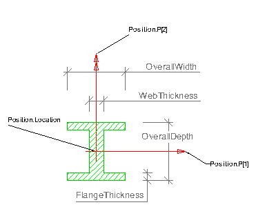

 |
Position
The parameterized
profile defines its own position coordinate system.
The underlying
coordinate system is defined by the swept area solid
that uses the profile definition. It is the xy plane of:
- IfcSweptAreaSolid.Position
by using offsets of the position location, the parameterized profile
can be positioned centric (using x,y offsets = 0.), or at any position
relative to the profile. Explicit coordinate offsets are used to define
cardinal points (e.g. upper-left bound).
Parameter
The parameterized profile
is defined by a set of parameter attributes, see attribute definition
below.
|

Note:
The black coordinate axes show the
underlying coordinate system of the swept surface or swept area solid |
Position
The profile is inserted into the underlying
coordinate system of the swept area solid by using the Position
attribute. In this example (cardinal point of lower left corner) the
attribute values of IfcAxis2Placement2D
are:
Location
= IfcCartesianPoint(<1/2
OverallWidth>,<1/2 OverallDepth>)
RefDirection = NIL (defaults to 1.,0.)
Parameter
If the FilletRadius
is given, it is equally applied to all four corners created by the web
and flanges.
|
 EXPRESS-G diagram
EXPRESS-G diagram Link to this page
Link to this page